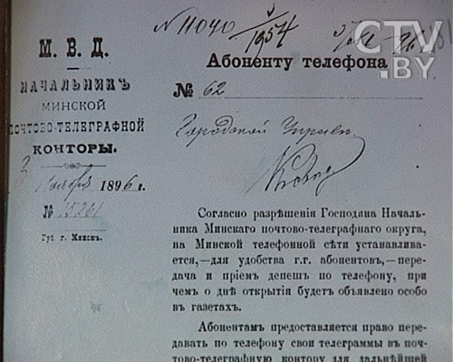
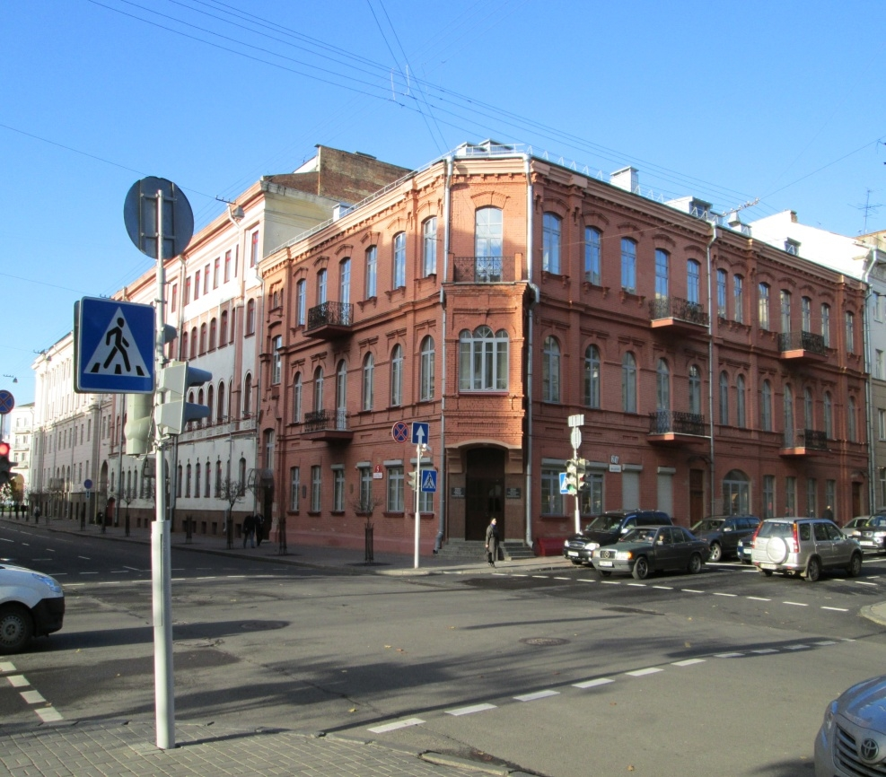

The three-storey building on the corner of Podgornaya and Serpukhovskaya was built in the early 20th century for the Police Department and Criminal Investigation. [10, p. 168] In addition to the City Police Department and Department of Investigation here in different years worked address table, the County Rural Council, the District Committee of the Guardianship of people's sobriety, district Congress of Zemstvo leaders, who appeal to the volost rural courts and telephone exchange [14, Pp. 160-161].
The city owes the appearance of the first phones, first of all, to the initiative of the local police. On June 16, 1890, the police chief asked the mayor to install telephones in all police units, the city police, as well as in his own apartment. A month later, the Minsk City Council at an urgent meeting granted this request and allocated 913 roubles 20 kopecks for its implementation. Thus, the first 8 telephones with a Central station in the City Police Department, were installed in Minsk. They connected 4 police units, the apartment of the Governor, the police chief, the city administration and the fire yard [8, p. 94]. In February 1891 a home phone was installed for the Governor, in 1893 for the Minsk mayor. As of November 24, 1893 there were 27 devices were operating in the city.
Here in 1917 the national police of Minsk founded by M. V. Frunze was located, which numbered over 200 people. Now the Reception of the State Control Committee of the Republic of Belarus is located in this building.

